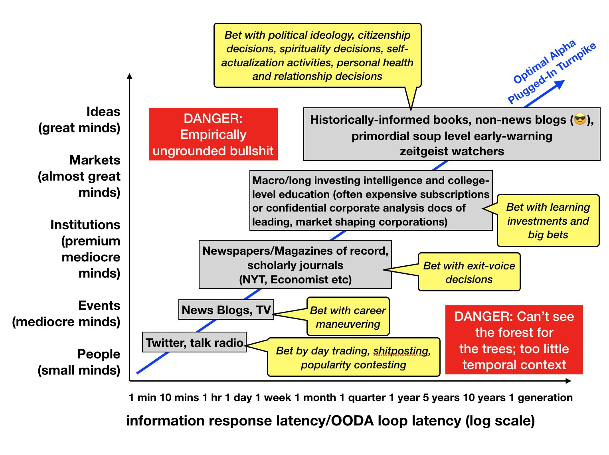

«So you plant your own garden and decorate your own soul, instead of waiting for someone to bring you flowers» — Jorge Luis Borges, After a While
По суті, сад — це щось середнє між парком, яким управляють професіональні садівники на заробітній платі, та таємничим диким лісом, де дуже цікаво та неочікувано, але скрізь непривітні кущі, кліщі та комарі. Приблизно так вперше описав гіпертекст Марк Бернстайн в «Гіпертекстові сади» в 1998 році. Хоча він вперше використав цей термін, він скоріше досліджував силу та особливості гіпертексту як нового інструменту та метафори, якими його можна описати.
2015: сад і потік Майка Кофілда
Основи сучасного розуміння цифрових садів заклав дослідник освіти Майк Кофілд в 2015 році в промові та есе «Сад і потік: технопастораль». Він питає: скільки часу ми витрачаємо на суперечки, просування своїх думок і скільки на те, щоб зробити внесок у загальний фонд знань або хоча б дослідити цей фонд? Його турбує, що розповсюджені соціальні мережі та блоги за своєю будовою підходять для самовираження, але не для навчання та дослідження. Для цих важливих активностей людству потрібно також щось більш позачасове і менш особисте, ніж архітектура інстаграму. Щоб краще розібратися про що мова, він пропонує подумати про два принципово різних підходи до інтернету, для яких використовує метафору саду і потоку. Нижче головні думки Майка.
Сад — це простір, по якому можна мандрувати різноманітними шляхами. Кожна прогулянка садом створює нові стежки, нові значення, і коли ми додаємо щось до саду, ми додаємо це таким чином, що відкриває багато майбутніх, непередбачуваних шляхів. Кожна квітка, дерево та виноградна лоза розглядаються садівником у зв’язку з цілим, щоб можна було отримати унікальний, але цілісний досвід, знаходячи власні стежки в саду.
Потік — це щось, що тебе несе або дає відчути свою силу. Він буде відбувається без твоєї участі. В нього можна стрибнути і дозволити йому тікти повз або віддатися. Ви також можете бути активними в потоці. Але ваші дії там — ваші дописи, згадки, коментарі — існують у контексті, який згортається до простого таймлайну подій, які разом утворюють наратив або розмову. Потік пропонує безкінечну розмову, безкінечно створюємий наратив.
В есе «Як ми можемо думати» 1945 року Ванневар Буш описує гіпотетичну машину майбутнього під назвою Мемекс. Його есе стало культовим, та передбачило винайдення гіпертексту за декілька десятиліть. В його описі, Мемекс — це скоріше бібліотека, а не пристрій для публікації, як це стало в кінці кінців з соцмережами. Ключова характеристика Мемексу в тому, що у вас є копії документів, якими ви керуєте, які ви можете анотувати, змінювати, додавати посилання, узагальнювати. Короче кажучі, в есе Буша, інтернет — це інструмент для мислення, а не інструмент для публікації. Зв’язувати, коментувати, змінювати, узагальнювати, копіювати та ділитися — це як раз дієслова цифрового садівництва, як їх описує Майк Кофілд.
Майк Кофілд вважав, що нам потрібно навчитися будувати мережу персонального та вселюдського навчання, як це уявляв Буш, а не лише приймати участь в розмовному потоці. Будувати ментальні моделі предметної області в співпраці. Вашу модель може взяти хтось інший і розширити, розвинути. Проте зараз інтернет є більше інструментом самовираження, а не інструментом для роздумів. Наскільки було б прекрасніше створювати інструменти для мислення разом, а не для суперечок та ідентифікації.
Домінація розмовного потоку в інтернеті – це погано також через проблему з важкодоступністю відкритих навчальних ресурсів. Наприклад, якщо взяти тему місцевих субсідій і загуглити її, ви знайдете тонну новин та блог постів з різними позиціями, але жодного syllabus, тобто готової до використання навчальної програми. (Цікаво наскільки зараз простіше знайти syllabus по будь-якій темі з ШІ?)
Тут люди кажуть: «але подивіться на Вікіпедію!». Вікімедіа це один з небагатьох куточків інтернету, який схожий на Мемекс Буша. Проте уявіть (дісклеймер: дані на момент 2015 року): мільярд людей пишуть свої думки про всяку нісенітницю у Facebook; близько 31 000 активних вікіпедистів тримають англійську Вікіпедію разом, що є приблизно населення Стенфордського університету, студенти, викладачі та співробітники разом узяті, для всього англомовного світу.
Освітній проект Вікімедіа робить багато, Github навчив покоління програмістів, що копії – це добре, а не погано. Девід Вайлі окреслив схему, за якою студенти могли б створювати підручники майбутнього, і ви можете собі уявити, що замість того, щоб створювати окремі підручники, ми могли б залучити студентів до побудови грандіозної мережі знань, які можна було б, як шляхи Буша, переконфігурувати та дублювати, щоб служити конкретним класам і цілям. Головна думка Майка в тому, що ми можемо уявити собі світ набагато кращий за цей, якби тільки ми могли на деякий час відірватися від потоку та спробувати побудувати сад.
2018: принципи будування саду Тома Крітчлоу
Стратегіст Том Крітчлоу прочитав есе Кофілда та почав розмірковувати як створити свій сад. В той ж час, він побачив тред Венкатеша про те, що насправді між крайностями думскролінгу та технологічного детоксу є багото сірих відтінків. Нижче зображення Венкатеша, яке ілюструє як можна менеджерити свою інформаційно-споживацьку увагу в різній степені. Ось «y» – це відсилка до цитати «маленькі уми говорять про людей, середні уми говорять про події, великі уми говорять про ідеї». Цитата трохи віддає квешенебл висновками, проте прочитайте тред, якщо ви про це подумали. Там є аргумент, що ми віддаємо забагато кредіту злbй архітектурі та дизайну платформ, — і це можна поставити на контраст з тезами Майка Кофілда. Думаю, правда, як часто, десь посередні.

1: балансувати між потоком та садом
Том Крітчлоу також читав статтю Робіна Слоуна про різницю між потоком та акціями. Робін написав про це ще у 2010 році, обравши схожу метафору, але вже з мови економіки:
Потік – це стрічка новин. Це публікації та твіти. Це потік щоденних та субденних оновлень, який нагадує людям про ваше існування.
Акції – це довговічні речі. Це контент, який ви створюєте, який буде таким же цікавим через два місяці (або два роки), як і сьогодні. Це те, що люди знаходять через пошук. Це те, що поширюється повільно.
Потік швидкоплинний, а акції – це капітал. Акції – це білок. Справжній фокус полягає в тому, щоб поєднати їх обидва. Щоб м'яч відскакував у вашому потоці – щоб підтримувати цей відкритий канал комунікації – поки ви працюєте над якоюсь крутою акцією на задньому плані. Не жертвуйте жодним з них. Гібридна стратегія.
2: блог без кнопки «опублікувати»
Ідея в тому, щоб публікувати не лише завершені тексти, але й сам процес думання. Один з прикладів — відкрита нотатка Райана Давіджана, де він оновлює в реальному часі свої ідеї та думки, які ще не перетворилися в щось більше оформлене.
The Internet can be more than just a resting place to publish your finished ideas - it can also be an incubator for ideas that aren't fully formed, a birthing center for developing work that you haven't started yet. (p. 82) — Kleon, A. (2012). Steal Like An Artist. Ten Things Nobody Told You About Being Creative.
3: простір для того, щоб бачити ідеї
Творче дослідження — це збирання ідей. Правда полягає в тому, що ви не можете з’єднати ідеї, яких не бачите. Ми можемо утримувати в своєму мозку лише невелику кількість речей одночасно, хтось каже не більше ніж 7. Тож простір для збирання (і впорядкування) ідей є важливою основою для мислення та творчості. Про це також писав Янг в першій відомій книжці про техніку створення ідей, [[A Technique for Producing Ideas]] Історик технологій Стівен Джонсон також пише про це в Where Good Ideas Come From, детальніше в моїй нотатці про це під назвою [[Maленькі початки]].
Вікі-проєкти окремих людей та спільнот
- are.na — платформа, яку використовують усі круті діти для створення особистих бібліотек знань
- Сторінка цитат Worrydream — це просто величезний список цікавих цитат, зібраних Бреттом Віктором. Зверніть увагу, як одна гігантська сторінка робить її миттєво доступною для пошуку.
There are a few things about gardening that are extraordinarily parallel to the way we should be crafting our ideas, work, and relationships:
A gardener does not dig up a seed the day after it’s planted to see if it has grown. For many days, it will appear that you are giving such care to a pile of dirt, until one day, break-through happens.
A gardener does not only water a plant after it has bloomed. Most people will hop on board after something is already beautiful, but as the creator, you must give the care and attention long before anyone else can see the results.
Planting a seed and eating the fruit can never happen in the same day. The fruit eaten from the grocery store will never feel the same as the one you picked off a tree you planted. Delayed gratification will always mean more to us than that which comes instantly.